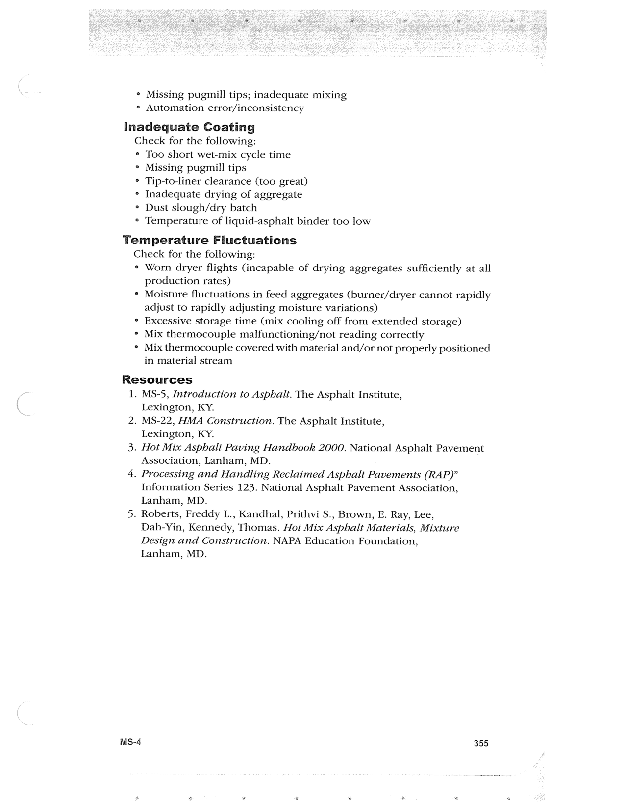

PDF page 389 · book page sequence 355


Searchable transcription
Unproofread OCR · 189 detected words; mean OCR confidence 91.99. Check technical values, symbols and table columns against the scan.
° Missing pugmill tips; inadequate mixing ¢ Automation error/inconsistency
Inadequate Coating
Check for the following:
° Too short wet-mix cycle time
° Missing pugmill tips
° Tip-to-liner clearance (too great)
* Inadequate drying of aggregate
° Dust slough/dry batch
° Temperature of liquid-asphalt binder too low
Temperature Fluctuations
Check for the following:
° Worn dryer flights (incapable of drying aggregates sufficiently at all production rates)
* Moisture fluctuations in feed aggregates (burner/dryer cannot rapidly adjust to rapidly adjusting moisture variations)
° Excessive storage time (mix cooling off from extended storage)
° Mix thermocouple malfunctioning/not reading correctly
¢ Mix thermocouple covered with material and/or not properly positioned in material stream
Resources
1.
2.
MS-5, Introduction to Asphalt. The Asphalt Institute,
Lexington, KY.
MS-22, HMA Construction. The Asphalt Institute,
Lexington, KY.
. Hot Mix Asphalt Paving Handbook 2000. National Asphalt Pavement Association, Lanham, MD.
. Processing and Handling Reclaimed Asphalt P Pavements (RAP)” Information Series 123. National Asphalt Pavement Association, Lanham, MD.
. Roberts, Freddy L., Kandhal, Prithvi S., Brown, E. Ray, Lee,
Dah-Yin, Kennedy, Thomas. Hot Mix Asphalt Materials, Mixture
Design and Construction. NAPA Education Foundation,
Lanham, MD.
Ms-4 355